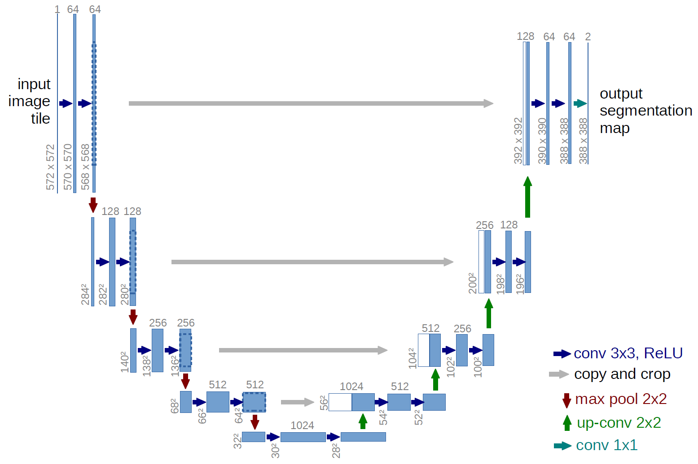
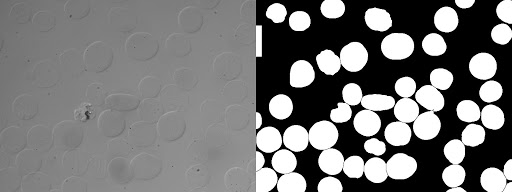
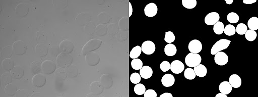
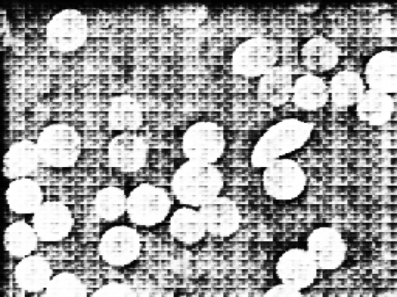

U-Netで細胞認識

神大の味岡です。 今回は、deep learningの中でも画像から物体の領域を検出する「セマンティックセグメンテーション」といわれる手法についてです。 医療系の画像では、U-Netといわれるネットワークが有名です。
U-Netの特徴は？
(U-Netの処理の概要、https://lmb.informatik.uni-freiburg.de/people/ronneber/u-net/ からの画像)
セマンティックセグメンテーションは、CNNによるエンコードと、trans-convolutionによるデコードからなりますが、U-Netの特徴としてはCNNによる畳み込みの途中の画像を結合して処理に使用している点です。 そのため、処理のフローチャートは上の図のようにU字型になります。だからU-Netと呼ばれているんですね。
U-Netの実装
使用するPythonのパッケージは、tensorflow、keras、opencvです。
コードについては以下のブログのものを使用させて頂きました。
(ほとんど同じです)
http://ni4muraano.hatenablog.com/entry/2017/08/10/101053
以下にコードを載せます。
unet.py
まずU-Net処理を表した関数です。
unet.py の中身を見る
#!/usr/bin/env python
# -*- coding: utf-8 -*-
from keras.models import Model
from keras.layers import Input
from keras.layers.convolutional import Conv2D, ZeroPadding2D, Conv2DTranspose
from keras.layers.merge import concatenate
from keras.layers import LeakyReLU, BatchNormalization, Activation, Dropout
class UNet(object):
def __init__(self, input_channel_count, output_channel_count, first_layer_filter_count):
self.INPUT_IMAGE_SIZE = 256
self.CONCATENATE_AXIS = -1
self.CONV_FILTER_SIZE = 4
self.CONV_STRIDE = 2
self.CONV_PADDING = (1, 1)
self.DECONV_FILTER_SIZE = 2
self.DECONV_STRIDE = 2
# (256 x 256 x input_channel_count)
inputs = Input((self.INPUT_IMAGE_SIZE, self.INPUT_IMAGE_SIZE, input_channel_count))
# エンコーダーの作成
# (128 x 128 x N)
enc1 = ZeroPadding2D(self.CONV_PADDING)(inputs)
enc1 = Conv2D(first_layer_filter_count, self.CONV_FILTER_SIZE, strides=self.CONV_STRIDE)(enc1)
# (64 x 64 x 2N)
filter_count = first_layer_filter_count*2
enc2 = self._add_encoding_layer(filter_count, enc1)
# (32 x 32 x 4N)
filter_count = first_layer_filter_count*4
enc3 = self._add_encoding_layer(filter_count, enc2)
# (16 x 16 x 8N)
filter_count = first_layer_filter_count*8
enc4 = self._add_encoding_layer(filter_count, enc3)
# (8 x 8 x 8N)
enc5 = self._add_encoding_layer(filter_count, enc4)
# (4 x 4 x 8N)
enc6 = self._add_encoding_layer(filter_count, enc5)
# (2 x 2 x 8N)
enc7 = self._add_encoding_layer(filter_count, enc6)
# (1 x 1 x 8N)
enc8 = self._add_encoding_layer(filter_count, enc7)
# デコーダーの作成
# (2 x 2 x 8N)
dec1 = self._add_decoding_layer(filter_count, True, enc8)
dec1 = concatenate([dec1, enc7], axis=self.CONCATENATE_AXIS)
# (4 x 4 x 8N)
dec2 = self._add_decoding_layer(filter_count, True, dec1)
dec2 = concatenate([dec2, enc6], axis=self.CONCATENATE_AXIS)
# (8 x 8 x 8N)
dec3 = self._add_decoding_layer(filter_count, True, dec2)
dec3 = concatenate([dec3, enc5], axis=self.CONCATENATE_AXIS)
# (16 x 16 x 8N)
dec4 = self._add_decoding_layer(filter_count, False, dec3)
dec4 = concatenate([dec4, enc4], axis=self.CONCATENATE_AXIS)
# (32 x 32 x 4N)
filter_count = first_layer_filter_count*4
dec5 = self._add_decoding_layer(filter_count, False, dec4)
dec5 = concatenate([dec5, enc3], axis=self.CONCATENATE_AXIS)
# (64 x 64 x 2N)
filter_count = first_layer_filter_count*2
dec6 = self._add_decoding_layer(filter_count, False, dec5)
dec6 = concatenate([dec6, enc2], axis=self.CONCATENATE_AXIS)
# (128 x 128 x N)
filter_count = first_layer_filter_count
dec7 = self._add_decoding_layer(filter_count, False, dec6)
dec7 = concatenate([dec7, enc1], axis=self.CONCATENATE_AXIS)
# (256 x 256 x output_channel_count)
dec8 = Activation(activation='relu')(dec7)
dec8 = Conv2DTranspose(output_channel_count, self.DECONV_FILTER_SIZE, strides=self.DECONV_STRIDE)(dec8)
dec8 = Activation(activation='sigmoid')(dec8)
self.UNET = Model(input=inputs, output=dec8)
def _add_encoding_layer(self, filter_count, sequence):
new_sequence = LeakyReLU(0.2)(sequence)
new_sequence = ZeroPadding2D(self.CONV_PADDING)(new_sequence)
new_sequence = Conv2D(filter_count, self.CONV_FILTER_SIZE, strides=self.CONV_STRIDE)(new_sequence)
new_sequence = BatchNormalization()(new_sequence)
return new_sequence
def _add_decoding_layer(self, filter_count, add_drop_layer, sequence):
new_sequence = Activation(activation='relu')(sequence)
new_sequence = Conv2DTranspose(filter_count, self.DECONV_FILTER_SIZE, strides=self.DECONV_STRIDE,
kernel_initializer='he_uniform')(new_sequence)
new_sequence = BatchNormalization()(new_sequence)
if add_drop_layer:
new_sequence = Dropout(0.5)(new_sequence)
return new_sequence
def get_model(self):
return self.UNET
main.py
次に、実際に動かすスクリプトです。
main.py の中身を見る
IMAGE_SIZE = 256
# 値を-1から1に正規化する関数
def normalize_x(image):
image = image/127.5 - 1
return image
# 値を0から1に正規化する関数
def normalize_y(image):
image = image/255
return image
# 値を0から255に戻す関数
def denormalize_y(image):
image = image*255
return image
# インプット画像を読み込む関数
def load_X(folder_path):
import os, cv2
image_files = os.listdir(folder_path)
image_files.sort()
images = np.zeros((len(image_files), IMAGE_SIZE, IMAGE_SIZE, 1), np.float32)
for i, image_file in enumerate(image_files):
image = cv2.imread(folder_path + os.sep + image_file, cv2.IMREAD_GRAYSCALE)
image = cv2.resize(image, (IMAGE_SIZE, IMAGE_SIZE))
image = image[:, :, np.newaxis]
images[i] = normalize_x(image)
return images, image_files
# ラベル画像を読み込む関数
def load_Y(folder_path):
import os, cv2
image_files = os.listdir(folder_path)
image_files.sort()
images = np.zeros((len(image_files), IMAGE_SIZE, IMAGE_SIZE, 1), np.float32)
for i, image_file in enumerate(image_files):
image = cv2.imread(folder_path + os.sep + image_file, cv2.IMREAD_GRAYSCALE)
image = cv2.resize(image, (IMAGE_SIZE, IMAGE_SIZE))
image = image[:, :, np.newaxis]
images[i] = normalize_y(image)
return images
import os
import numpy as np
from keras.optimizers import Adam
import keras.backend as K
from keras.callbacks import ModelCheckpoint, EarlyStopping
from unet import UNet
# ダイス係数を計算する関数
def dice_coef(y_true, y_pred):
y_true = K.flatten(y_true)
y_pred = K.flatten(y_pred)
intersection = K.sum(y_true * y_pred)
return 2.0 * intersection / (K.sum(y_true) + K.sum(y_pred) + 1)
# ロス関数
def dice_coef_loss(y_true, y_pred):
return 1.0 - dice_coef(y_true, y_pred)
# U-Netのトレーニングを実行する関数
def train_unet():
# trainingDataフォルダ配下にimageフォルダを置いている
X_train, file_names = load_X('trainingData' + os.sep + 'image')
# trainingDataフォルダ配下にimage_segmentフォルダを置いている
Y_train = load_Y('trainingData' + os.sep + 'image_segment')
# 入力は1チャンネル
input_channel_count = 1
# 出力はグレースケール1チャンネル
output_channel_count = 1
# 一番初めのConvolutionフィルタ枚数は64
first_layer_filter_count = 64
# U-Netの生成
network = UNet(input_channel_count, output_channel_count, first_layer_filter_count)
model = network.get_model()
model.compile(loss=dice_coef_loss, optimizer=Adam(), metrics=[dice_coef])
BATCH_SIZE = 12
# エポック数は適宜調整する
NUM_EPOCH = 1000
history = model.fit(X_train, Y_train, batch_size=BATCH_SIZE, epochs=NUM_EPOCH, verbose=1)
model.save_weights('unet_weights.hdf5')
# 学習後のU-Netによる予測を行う関数
def predict():
import cv2
# testDataフォルダ配下にimageフォルダを置いている
X_test, file_names = load_X('testData' + os.sep + 'image')
input_channel_count = 1
output_channel_count = 1
first_layer_filter_count = 64
network = UNet(input_channel_count, output_channel_count, first_layer_filter_count)
model = network.get_model()
model.load_weights('unet_weights.hdf5')
BATCH_SIZE = 12
Y_pred = model.predict(X_test, BATCH_SIZE)
for i, y in enumerate(Y_pred):
# testDataフォルダ配下にimageフォルダを置いている
img = cv2.imread('testData' + os.sep + 'image' + os.sep + file_names[i])
y = cv2.resize(y, (img.shape[1], img.shape[0]))
cv2.imwrite('prediction' + str(i) + '.png', denormalize_y(y))
if __name__ == '__main__':
train_unet()
predict()
コメントを見るとわかる通り、trainingDataフォルダやtestDataフォルダなどを作ってそこに使用する画像を入れる仕組みです。
コードを細胞の画像に適用してみる
細胞の画像は以下です。2枚のトレーニング画像です。左が実際の画像、右がセグメンテーションの正解を表す2値画像となります。
 
今回は学習したモデルで、二つ目の画像をテスト画像としてセグメンテーションしてみました。
200エポック回した時のモデルでの結果が以下です。
 メッシュのようになっていてうまくいってないですね。もう少しエポック数が必要なのでしょうか。
1000エポック回した時のモデルでの結果が以下です。

だいぶセグメンテーションが出来てきました。 十分にエポック数を回すことが重要なようですね。 これでセマンティックセグメンテーションは一応成功しました。 もちろんトレーニングデータで使用した画像なので、過学習している可能性があります。
終わりに
今回はPythonで０からの学習を行いましたが、実は最近、U-NetはImageJのpluginから出来るようになりました。 linuxのサーバーにつないで行うみたいです。 詳しくは下記の論文を参考にしてください。 今回用いた画像はこのソフトのサンプル画像です。 https://www.nature.com/articles/s41592-018-0261-2?WT.feed_name=subjects_software
僕の研究室でもこれを導入して、細胞の検出やカウントに使用することになりました。 細胞の検出を手動で行えるようになると、研究が非常に効率的になりますね。